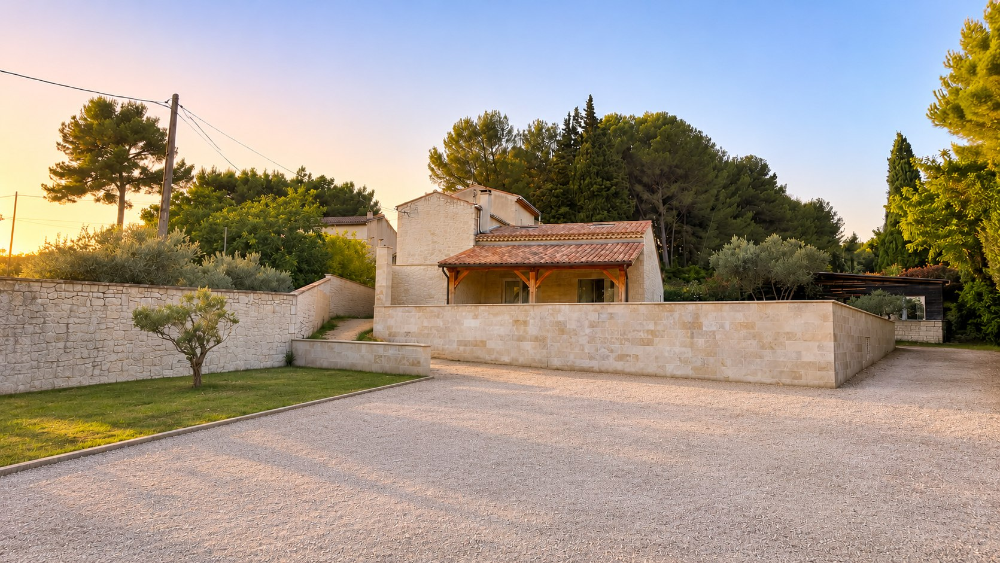

Nos chambres
Cinq chambres avec salle de bain et WC privatifs.
Voir les chambres
Cinq chambres meublées avec salle de bain et WC privatifs
Locations à la semaine, au mois ou pour une durée prolongée
Bienvenue
Au Domaine L’Escapade, nous proposons cinq chambres meublées à Saint-Chamas, adaptées notamment aux déplacements professionnels et aux séjours prolongés. Chacun dispose de son espace privatif et profite d’équipements communs pour le quotidien.
Cinq chambres avec salle de bain et WC privatifs.
Voir les chambresCuisine équipée et espace buanderie à partager.
DécouvrirÀ la semaine, au mois ou sur une durée plus longue.
Les formulesVotre séjour
Indiquez-nous les dates et la durée de location envisagées pour recevoir les renseignements utiles.
Nous contacter